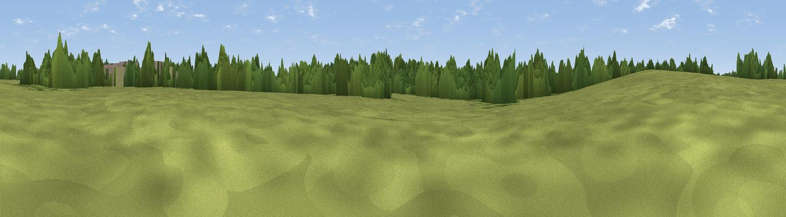

Jennett's Park Country Park
#46205 in England · top 96% of its area beats it · near Easthampstead · footpathWhere it is
The exact computed spot (SU 84295 67751). Click the marker for map links.
Public access: a public right of way passes within 16 m of this spot. Computed from Natural England's CRoW access layer and OpenStreetMap rights of way — not the legal definitive map. Always verify locally.
The view, rendered

A 360° render of this exact spot computed from the terrain model, tree cover and land cover — summer colours, afternoon light, calibrated against photographs of famous viewpoints. Real trees, hedges and buildings will differ in detail.
The panorama
Grey silhouette: terrain skyline in each direction (720 bearings, Earth curvature and refraction included). Dashed green: skyline with trees (+15 m) and buildings (+8 m) as obstacles. Blue strip: how far the ground is visible on each bearing.
Where the view opens
Wedge length = distance to the farthest visible ground on that bearing (vegetation-aware). Rings at 10, 25 and 50 km.
What fills the view
60% grassland · 32% woodland · 7% built-up
Angular shares of the visible panorama (visual magnitude), not map area. Landscape diversity 0.38 (0–1 Shannon).
Key numbers
More beautiful places nearby
The staircase of upgrades: each row has a higher view potential than everything closer. Driving times are estimates from straight-line distance, calibrated against real road routing — check an actual route before setting out.
| Place | Direction | Drive | Score |
|---|---|---|---|
| Gravel Hill | ESE · 4 km | ~9 min | 15.0 |
| Viewpoint near Crowthorne | SSE · 5 km | ~11 min | 32.5 |
| Viewpoint near Crowthorne | S · 5 km | ~11 min | 38.3 |
| High Curley Hill | SE · 9 km | ~18 min | 38.5 |
| Windsor Castle | NE · 16 km | ~28 min | 39.8 |
| Viewpoint near Ewshot | S · 17 km | ~30 min | 46.4 |
| Viewpoint near Upper Hale | S · 18 km | ~30 min | 46.8 |
| Horsedown Common | SSW · 21 km | ~35 min | 54.8 |
51.40253, -0.78958 · source: osm viewpoint · position refined by local search. Computed location — check access rights before visiting.